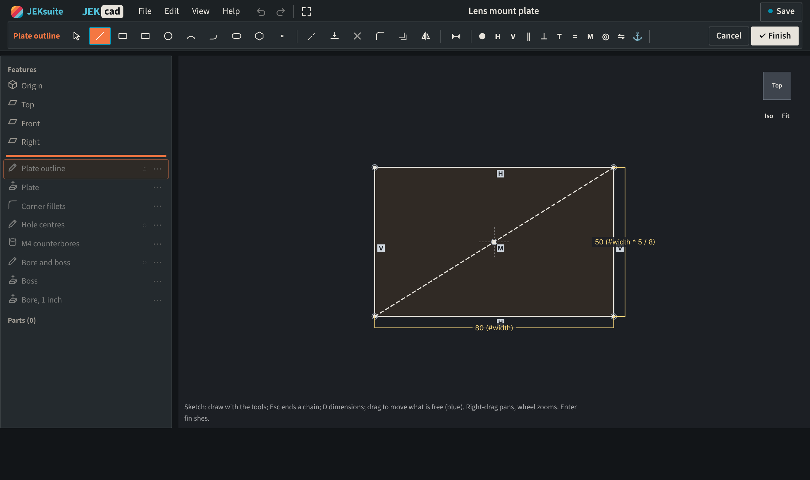
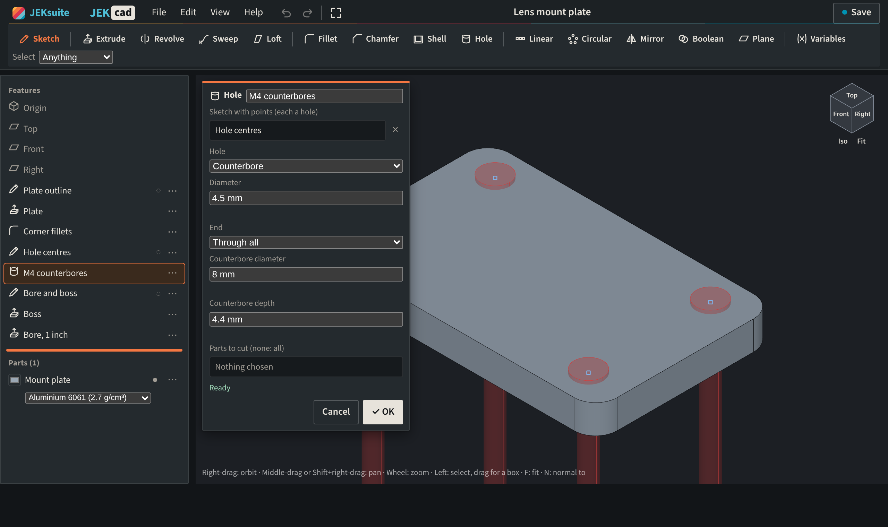

JEKcad: parametric CAD in your browser.
Sketch on a plane or a face, dimension it, and build solids from a feature list you can roll back and edit. The solids are made by Open CASCADE Technology, running on your computer.

Sketches that stay defined
Draw with constraints inferred as you go, and type each dimension where it sits. A dimension can be an expression or a variable such as #width * 5 / 8.

A feature list you can edit
Extrude, revolve, sweep, loft, fillet, shell and holes with counterbores. Each dialog previews its result over the model, and an edit lower in the list carries through.

Checked by hand
A 2 mm fillet takes (4 − π) × 10 mm³ from a block, and counterbored and countersunk holes remove their hand-worked volumes to 10−6 mm³. A part written as STEP and read back keeps its volume.
Resources
Getting started
JEKcad runs in your browser, with nothing to install and no account needed to model.
Your account
Exporting STEP or STL needs a free account. Keeping part studios in the cloud needs JEKrayPro, which covers every JEK app.
Modelling
Each part of the Part Studio and how it works.
In development
JEKcad is new. If a model fails or looks wrong, tell us and send the .jekcad file.